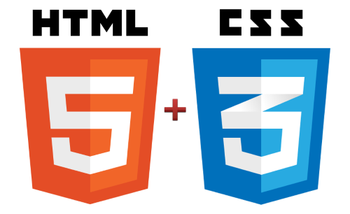

Apps
på få platforme.....dvs. få dimser på få platforme
så kom flere versioner og dimser
og så kom der endnu flere dimser og versioner af både dimser og OSer.
Nå ja - så er jo stadig Web'en
Over tid betød det
stigende:
- kompetencebehov
- kompleksitet og
- omkostninger
so what to do ?
kunne funktionalitet implementeres på tværs af store og små dimser?
HTML5
- er svaret på
det Hele!
DT genialt! DT DR
så ... vi dropper native applikationer og laver ...
HTML5
STOOOOOOOP!!!

der er situationer hvor native apps giver God Mening*
* især der,hvor kompleksiteten og økonomien står mål med gevinsten... hvor netop applikationen er selve produktet... netop DER er det helt fint!
men kan resten så laves i
HTML5?
...kinda
Undersøgelser viser at f.eks. netbankens funktionalitet
er meget vigtigt for brugeres dvs. kunders valg af bank...
mere end teknologien bag funktionaliteten....
meeen....

var der ikke noget med Facebook og HTML5
FIASKO
Facebook er ..... user til user
- en community orienteret model
- meget er sket på HTML5 siden...
:-)
HTML5 & omtanke!
man kan stadigt lave meget komplicerede applikationer, tilpasset den enkelte dims, platform og browser således man i realiteten har “mange applikationer i en og samme kildekode” .... og det betyder at omkostninger, kompleksiteten ikke er reduceret til det mulige....
"Mobile First - Single Application"
- bliver derfor interessant
Mobile First -> Single Applikation
det handler om at gå hårdt efter fuld funktionalitet på smartphones, og det skal give en god og genkendelig oplevelse på alle dimser, dvs. lille visuelt område - betjent med en tommelfinger
få det til at fungere på tværs af dimser og platforme...
Mobile First - Single Application - Cross platform
-> 1 applikation på tværs af af alle dimser
Fordele
Man skal komme helt ind til kernen af hvad der er nødvendigt at levere til brugerne for at de føler sig "ordentligt" betjent, de kan skifte til den dims der passer dem og stadigt overføre betjeningsintuiteten mellem dimser.
Bruger/Kunde vælger dims/device
-> til interaktionen med os
Der tales meget om ...
Mobile First
... Design bureauer synes at levere...
Tablet design
måske fordi det minder mest om det vi er vant til, eller
at det er det design, vi bedst kan lide at vælge ud fra ?
vi bygger MFSA-XPA applikationer
NU!
og det er svært...
Men
skal man kunne levere kosteffektiv software og betjene kunderne bedst mulig kan vi ikke anden vej, vi bygger på HTML5, Angular, Bootstrap og ser på Material Design....
Material Design....tager udgangspunkt i hvad mennesker finder intuitivt....
HTML5
præsentation... - "rdr" spørgsmål? Tablet